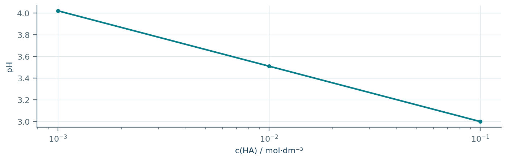
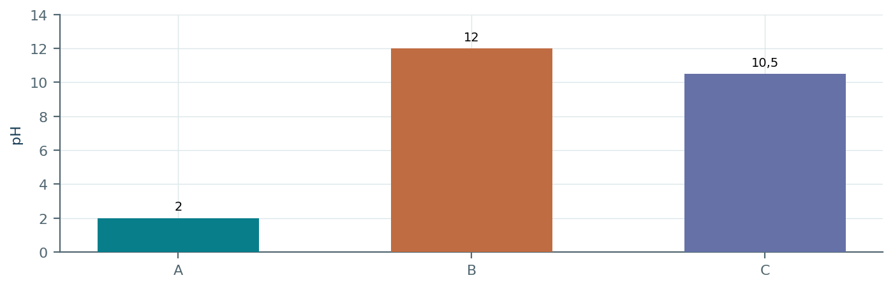
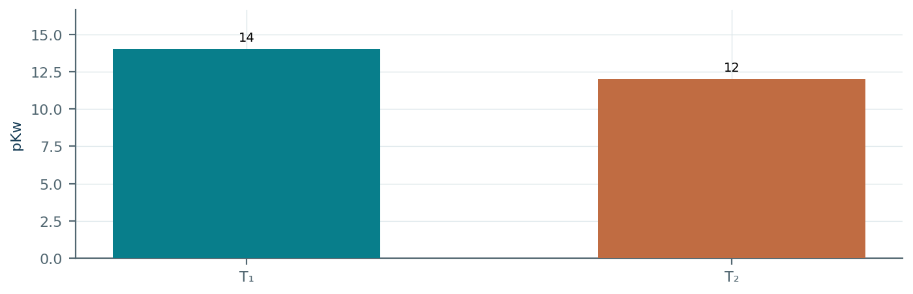
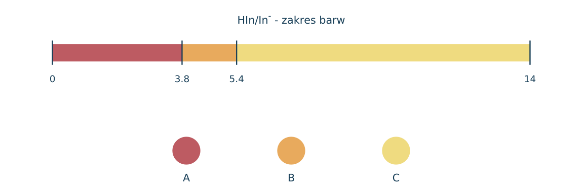
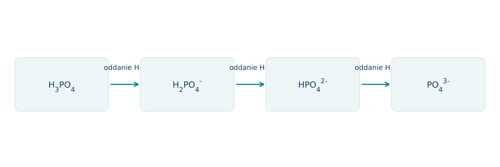
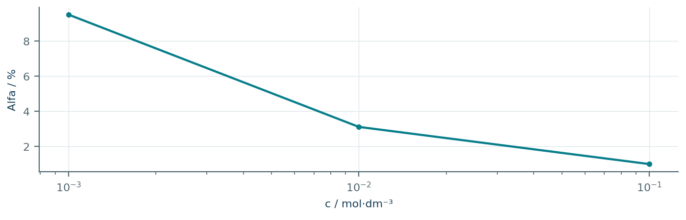
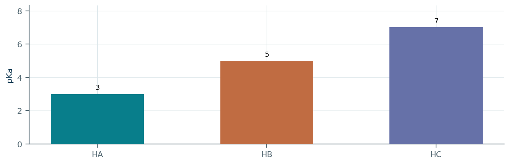
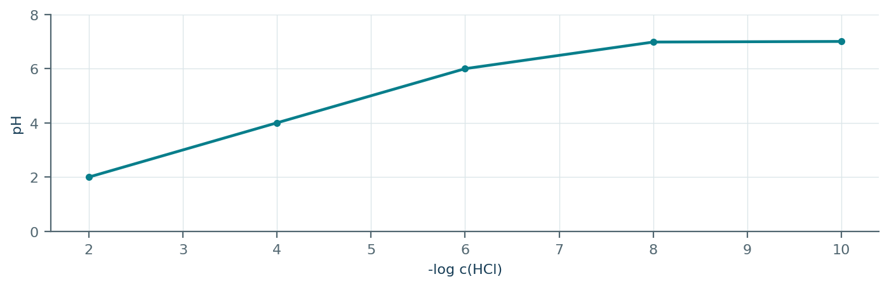
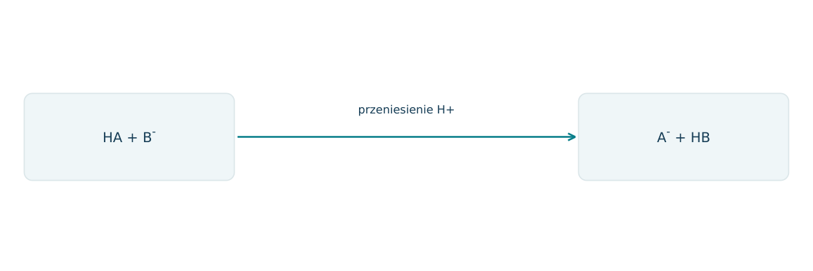
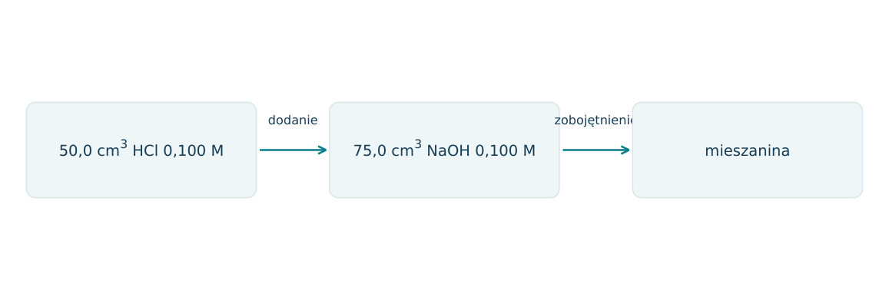

07.01 · 1 pkt
Napisz równanie dysocjacji Ca(NO3)2 w wodzie.
Rozwiązanie
- Ca(NO3)2 → Ca2+ + 2NO3-.
50 zadań · 109 pkt · odpowiedzi rozwijane po samodzielnej próbie
← KatalogZadania PDFRozwiązania PDFDane do obliczeń: H 1; C 12; N 14; O 16; Na 23; Mg 24; Al 27; P 31; S 32; Cl 35,5; K 39; Ca 40; Cr 52; Mn 55; Fe 56; Cu 64; Zn 65; Ag 108; Br 80; I 127; Ba 137 (g/mol). NA = 6,02·1023 mol-1. Vm = 22,4 dm3/mol w warunkach normalnych (0°C, 1013 hPa). W 25°C Kw = 10-14. Dane podane w zadaniu mają pierwszeństwo.
Napisz równanie dysocjacji Ca(NO3)2 w wodzie.
Oceń zdania A i B, wpisując P albo F. Każde zdanie fałszywe popraw lub krótko uzasadnij. A: Ka słabego kwasu przy stałej T w szkolnym modelu nie zależy od stężenia. B: Rozcieńczanie słabego kwasu zwykle zmniejsza stopień dysocjacji.
Napisz równanie reakcji NH3 z wodą i wskaż zasadę Brønsteda.
Wskaż sprzężone pary w HCO3- + H2O ⇌ CO32- + H3O+.
Wykaż dwoma równaniami, że HCO3- może oddawać i przyjmować proton.
Napisz wyrażenie na Ka kwasu HA przy zapisie HA + H2O ⇌ H3O+ + A-.
Zdefiniuj stopień dysocjacji i wskaż, czy jest to wielkość stała dla danego kwasu.
Z 0,020 mola HA zdysocjowało 0,0010 mola. Oblicz α i procent dysocjacji.
Roztwór HA ma c=0,20 mol/dm3 i α=0,010. Oblicz [H3O+] i pH; pomiń autodysocjację wody.
Dwa kwasy mają Ka: 1,0·10-3 i 1,0·10-5. Który jest mocniejszy i dlaczego?
Czy bardziej stężony roztwór słabego kwasu musi zawierać mocniejszy kwas niż roztwór rozcieńczony?
Jak rozcieńczanie słabego kwasu wpływa na stopień dysocjacji przy stałej temperaturze?
Oblicz pH 0,010 mol/dm3 HCl, zakładając całkowitą dysocjację.
Oblicz pH 0,0020 mol/dm3 NaOH w 25°C.
Oblicz pH 0,0050 mol/dm3 Ba(OH)2 w 25°C, zakładając pełną dysocjację.
pH roztworu wynosi 3,40. Oblicz [H3O+] i [OH-] w 25°C.
[OH-]=2,0·10-5 mol/dm3. Oblicz pH w 25°C.
Jak zmieni się [H3O+] po obniżeniu pH z 5 do 3?
100 cm3 roztworu HCl o pH=2 rozcieńczono do 1,0 dm3. Oblicz nowe pH, pomijając autodysocjację wody.
Dla HA c=0,10 mol/dm3, Ka=1,0·10-5. Oblicz przybliżone pH z [H3O+]≈√(Ka c) i sprawdź α.
Dla NH3 c=0,10 mol/dm3, Kb=1,0·10-5, oblicz przybliżone pH w 25°C.
HA ma c=0,10 mol/dm3 i α=0,020. Oblicz Ka z prawa Ostwalda.
Kwas HA ma c=0,010 mol/dm3 i Ka=1,0·10-3. Oblicz [H3O+] bez przybliżenia małego α.
Dlaczego przybliżenie [HA]≈c zawodzi przy stopniu dysocjacji 30%?
Dla sprzężonej pary HA/A- podano Ka·Kb=Kw. Oblicz Kb A- dla Ka=2,0·10-5 w 25°C.
Uporządkuj moc sprzężonych zasad kwasów o Ka: HX=10-2, HY=10-5, HZ=10-9.
Czy woda może być jednocześnie kwasem i zasadą Brønsteda? Podaj parę sprzężoną dla każdej roli.
Napisz równanie autodysocjacji wody.
W temperaturze T wartość Kw=1,0·10-12. Oblicz pH wody obojętnej i wyjaśnij, czy musi wynosić 7.
Rozstrzygnij: Ka i stopień dysocjacji tego samego słabego kwasu są niezależne od jego stężenia w stałej temperaturze.
Jak zbadać, czy roztwór bezbarwnej substancji jest elektrolitem? Podaj próbę kontrolną.
Wskaźnik HIn ma barwę kwasową czerwoną, a In- żółtą. Dla HIn⇌H+ + In- przewidź skutek dodania zasady i uzasadnij.
Zmieszano 100 cm3 0,010 mol/dm3 HCl i 100 cm3 wody. Oblicz pH; objętości addytywne.
Napisz trzy kolejne etapy dysocjacji H3PO4 w wodzie, używając H3O+.
Czy pH=1 oznacza dziesięciokrotnie większą kwasowość w sensie [H3O+] niż pH=2?
Dwa roztwory mają to samo c=0,10 mol/dm3: HCl i HA o Ka=10-5. Porównaj pH i stopień dysocjacji.
Dane pomiarowe HA: c=0,10, pH=3,00 oraz c=0,010, pH=3,50. Oblicz przybliżone α w obu roztworach i określ trend.
Dlaczego samo przewodnictwo nie pozwala pewnie porównać mocy dwóch kwasów o nieznanych stężeniach?
Dla reakcji HA+B-⇌A-+HB przyjmij K=Ka(HA)/Ka(HB). Dla Ka(HA)=10-3 i Ka(HB)=10-7 oblicz K i wskaż kierunek uprzywilejowany.
Kwas HA ma c=0,010 mol/dm3 i Ka=1,0·10-3. a) Napisz równowagę i wyrażenie Ka. b) Ułóż równanie z x=[H3O+], bez przybliżenia małego α. c) Oblicz pH. d) Oblicz α i oceń przybliżenie [HA]≈c.
Każdy numer 41-50 oznacza jedno zadanie główne; podpunkty są oceniane osobno.
Dla kwasu HA zbadano pH przy kolejnych rozcieńczeniach w 25°C. Wykres przedstawia idealny model kwasu o Ka bliskiej 10-5. Dla c=0,100 mol/dm3 odczytaj pH≈3,00; pomiń wkład autodysocjacji wody.

07.41.1 (2 pkt) Oblicz [H3O+], α i Ka w roztworze 0,100 mol/dm3 z podanego odczytu.
07.41.2 (1 pkt) Wyjaśnij, dlaczego po rozcieńczeniu α rośnie, mimo że pH również rośnie.
07.41.3 (1 pkt) Czy wzrost pH dowodzi zmiany mocy chemicznej tego kwasu?
[H3O+]=10-3, α=0,0100=1,00%; Ka=10-6/(0,100-0,001)≈1,01·10-5.
Większa część kwasu dysocjuje, ale całkowite stężenie kwasu spada tak, że [H3O+] jest mniejsze.
Nie; przy tej samej T Ka pozostaje stała w przyjętym modelu, zmienia się stężenie.
Roztwory HCl, NaOH i NH3 mają jednakowe stężenia analityczne 0,0100 mol/dm3. Ich pH w 25°C zestawiono na wykresie, przypisując im losowe litery A-C. Kb(NH3)=1,0·10-5.

07.42.1 (2 pkt) Zidentyfikuj roztwory i uzasadnij różnicę między B i C.
07.42.2 (1 pkt) Z pH C oblicz przybliżony stopień reakcji NH3 z wodą.
07.42.3 (1 pkt) Napisz równanie dla NH3 i wskaż sprzężoną parę kwas-zasada z azotem.
A=HCl, B=NaOH, C=NH3; NH3 reaguje z wodą tylko częściowo, więc daje mniej OH- niż NaOH.
[OH-]=10-3,50≈3,16·10-4; α≈0,0316=3,16%.
NH3+H2O⇌NH4++OH-; para NH4+/NH3.
Wykres pokazuje wartości pKw=-log Kw w dwóch temperaturach. W obu próbkach znajduje się wyłącznie czysta woda. Nie zakładaj, że pH obojętne zawsze wynosi 7.

07.43.1 (2 pkt) Oblicz Kw i obojętne [H3O+] dla T2.
07.43.2 (1 pkt) Podaj pH obojętnej wody w obu temperaturach.
07.43.3 (1 pkt) Czy pH=6 w T2 oznacza wprowadzenie do wody kwasu? Uzasadnij definicją odczynu.
Kw=10-12; [H3O+]=[OH-]=√(Kw)=10-6 mol/dm3.
T1: pH=7; T2: pH=6.
Nie; w T2 roztwór jest obojętny, bo [H3O+]=[OH-].
Wskaźnik HIn/In- jest czerwony przy pH<3,8, żółty przy pH>5,4, a w przedziale przejściowym pomarańczowy. Schemat pokazuje próbki A-C. Tylko w B dodatkowo zmierzono pH=4,20.

07.44.1 (2 pkt) Podaj przedziały pH A i C oraz oblicz [H3O+] w B.
07.44.2 (1 pkt) Dlaczego nie da się podać dokładnego pH A tylko z barwy?
07.44.3 (1 pkt) Dla HIn⇌H++In- określ, która forma przybędzie po dodaniu NaOH, i wyjaśnij.
A: pH<3,8; C: pH>5,4; B: [H3O+]=10-4,20≈6,31·10-5 mol/dm3.
Ta sama barwa występuje w całym przedziale po jednej stronie zmiany barwy.
Przybywa żółtej In-; OH- zużywa H+, przesuwając równowagę dysocjacji w prawo.
Schemat pokazuje kolejne oddawanie protonów przez H3PO4. Dla pary H2PO4-/HPO42- podano pKa2=7,20 oraz zależność pH=pKa2+log([HPO42-]/[H2PO4-]). To informacja do wykorzystania, nie wzór wymagany z pamięci.

07.45.1 (2 pkt) Zapisz reakcję H2PO4- z wodą w roli kwasu oraz w roli zasady.
07.45.2 (1 pkt) Oblicz stosunek stężeń wskazanych w podanym wzorze przy pH=8,20.
07.45.3 (1 pkt) Która forma z tej pary przeważa przy pH=7,20?
H2PO4-+H2O⇌HPO42-+H3O+; H2PO4-+H2O⇌H3PO4+OH-.
[HPO42-]/[H2PO4-]=10^(8,20-7,20)=10.
Żadna; ich stężenia są równe, bo log stosunku wynosi zero.
Na wykresie pokazano procentowy stopień dysocjacji tego samego kwasu HA w funkcji c. Punkty odpowiadają Ka=10-5 w modelu idealnym. Do obliczeń przy c=0,100 użyj α=0,00995.

07.46.1 (2 pkt) Oblicz Ka z dokładnej postaci prawa Ostwalda.
07.46.2 (1 pkt) Oceń, dla którego końca wykresu przybliżenie 1-α≈1 jest lepsze.
07.46.3 (1 pkt) Dlaczego nie wolno wstawić 0,995 jako α przy odczycie 0,995%?
Ka=c α2/(1-α)≈0,100·0,009952/0,99005≈1,00·10-5.
Dla większego c=0,100, gdzie α jest najmniejsze.
Alfa jest ułamkiem, nie liczbą procentową; właściwie 0,00995, a błąd byłby stukrotny.
Wykres podaje pKa trzech kwasów jednoprotowych: HA, HB i HC. Roztwory mają to samo c=0,100 mol/dm3. Przyjmij Kw=10-14 oraz dla słabej dysocjacji [H3O+]≈√(Ka c).

07.47.1 (2 pkt) Uszereguj kwasy według wzrastającej mocy i zasady A-, B-, C- według wzrastającej zasadowości.
07.47.2 (2 pkt) Oblicz przybliżone pH roztworu HB i sprawdź α.
07.47.3 (1 pkt) Czy największy słupek oznacza największą Ka? Wyjaśnij znaczenie skali.
Kwasy HC<HB<HA; zasady A-<B-<C-.
Ka=10-5, [H3O+]≈10-3, pH≈3,00; α≈1%, więc przybliżenie jest dobre.
Nie; pKa=-log Ka, więc większe pKa oznacza mniejszą Ka.
Dla HCl przy bardzo małym c należy uwzględniać wodę. Podano [H3O+]=(c+√(c2+4Kw))/2. Wykres pokazuje obliczone pH, gdy c zmienia się o wiele rzędów wielkości. Temperatura 25°C.

07.48.1 (2 pkt) Oblicz pH dla c=10-8 mol/dm3 z podanego wzoru.
07.48.2 (1 pkt) Wyjaśnij, dlaczego użycie pH=-log c prowadzi tutaj do sprzecznego wyniku 8.
07.48.3 (1 pkt) Do jakiej wartości dąży pH przy dalszym rozcieńczaniu i czy przekroczy ją od góry?
[H3O+]≈1,05125·10-7 mol/dm3; pH≈6,978.
Pominięto H3O+ pochodzące z wody, istotne wobec tak małego dodatku kwasu.
Dąży do 7 od dołu; samo dodawanie wody do HCl nie tworzy zasady w tym modelu.
Na schemacie pokazano HA+B-⇌A-+HB. Dane: Ka(HA)=10-4, Ka(HB)=10-8. Podano K=Ka(HA)/Ka(HB) dla tej reakcji. Zinterpretuj wynik w języku teorii Brønsteda.

07.49.1 (2 pkt) Oblicz K i wskaż stronę uprzywilejowaną równowagowo.
07.49.2 (1 pkt) Wskaż donor i akceptor protonu oraz obie pary sprzężone.
07.49.3 (1 pkt) Dlaczego reakcja prowadzi w stronę słabszego kwasu i słabszej zasady?
K=104; uprzywilejowane produkty.
Donor HA, akceptor B-; pary HA/A- i HB/B-.
HB jest słabszy od HA, a A- słabsza od B-; odpowiada to dużemu ilorazowi Ka i przewadze produktów.
Do kolby wprowadzono wskazane na schemacie roztwory HCl i NaOH. Załóż pełną dysocjację, addytywność objętości, temperaturę 25°C oraz brak reakcji z CO2 z powietrza.

07.50.1 (2 pkt) Oblicz ilości reagentów i wskaż ten, który pozostaje w nadmiarze.
07.50.2 (2 pkt) Oblicz pH mieszaniny.
07.50.3 (1 pkt) Napisz jonowe równanie procesu i wyjaśnij, dlaczego średnia arytmetyczna początkowych pH nie jest wynikiem.
HCl: 0,00500 mol; NaOH: 0,00750 mol; nadmiar OH-=0,00250 mol.
[OH-]=0,00250/0,125=0,0200 mol/dm3; pOH=1,699; pH≈12,30.
H++OH-→H2O; reagenty zużywają się stechiometrycznie, a pH jest logarytmem pozostałego stężenia, nie wielkością addytywną.